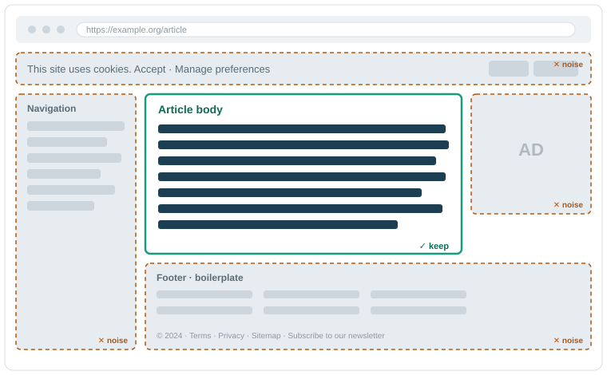
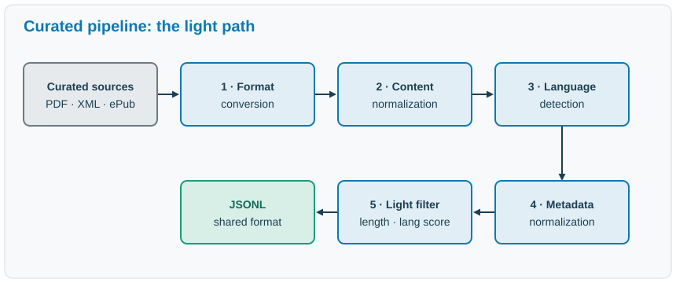
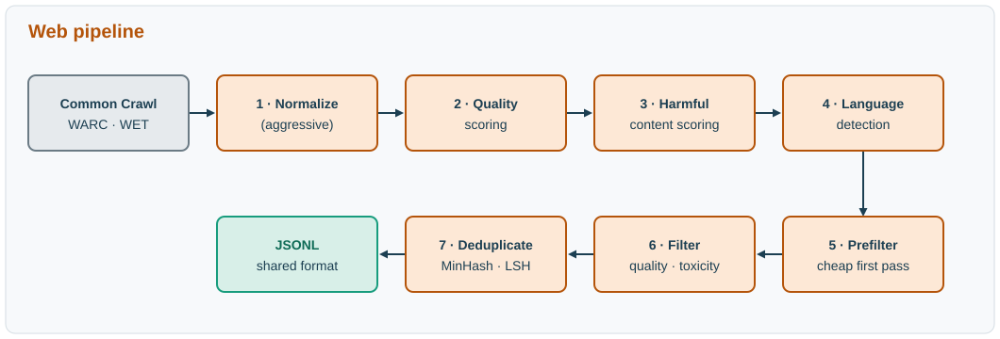
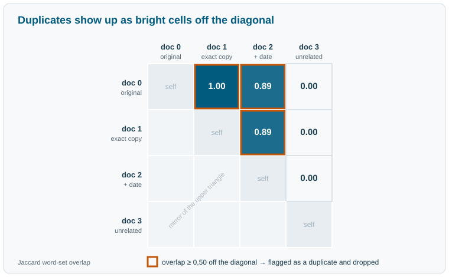

The pipeline
Last updated on 2026-11-04 | Edit this page
Overview
Questions
Objectives
The pipeline
How raw text becomes training data. We follow two paths, curated and web, from their very different starting points to a single shared output.
Not all text is equal
A model learns from whatever text it is shown, so the composition of the data (its sources, its domains, its quality) shapes how the model behaves (Gao et al. 2020; Penedo et al. 2024).
Raw text from the internet is uneven:
- clean prose sits next to navigation menus, cookie banners, and boilerplate
- the same page can appear thousands of times
- some text is spam or machine-generated filler

On a typical web page, the genuinely useful prose (the article body) is a small island in a sea of navigation, cookie banners, ads, and boilerplate. The pipeline’s job is to keep the island and discard the rest.
More text is not automatically better text. The job of a data pipeline is to turn a large, messy pile of raw text into a smaller body of training data that is actually worth learning from.
The fork: curated vs web
That job starts by splitting the raw material by where it came from: two kinds of source need two kinds of handling.
Curated sources are collections that already passed through a human curation process before we ever saw them: a book has an editor, an encyclopedia has reviewers, parliamentary proceedings have an official transcriber. That editorial care, someone whose job was to make the text correct and coherent, is what makes them relatively clean, relatively small, and high value per token. They take the light path, precisely because most of the quality work was already done upstream.
Web data comes from large crawls of the open internet. It is enormous and cheap to obtain, but mostly low value. It takes the heavy path: it needs aggressive cleaning before it is usable (Penedo et al. 2024).
The next two sections follow each path from its raw input to the shared JSON record they both produce.
Curated pipeline

The curated path, following Figure 1 of Brandizzi et al. (2024): convert each source to plain text, normalize its content, detect its language, normalize its metadata, then apply light filtering. Both paths end in the same shared JSONL record.
The curated path is short because the inputs are already orderly.
Format conversion and content normalization
Curated sources arrive in many formats: PDF, XML, HTML, ePub. The first step is format conversion: extract the plain text1 into one common representation, UTF-8 text with the source’s markup and layout discarded. The second is content normalization: make the text valid, canonical UTF-8, standardize whitespace and line breaks, and remove stray control characters and conversion artifacts.
This is small and unglamorous work, but it removes a whole class of downstream errors before they can spread.
Let’s start by reading in an example file and looking at how it looks when it is read in:
PYTHON
def read_file(filepath):
with open(filepath) as file_obj:
return file_obj.read()
raw_text = read_file("data/messy_file.txt")If we print the text from our file, it looks ok, but we see spaces and new lines:
OUTPUT
Café World text here
But looking at the “repr” (representation) of the text, we can see
that there are some tabs (\t), new lines (\n)
and even some unicode (\\xa0):
OUTPUT
"'Café\\xa0\\xa0World\\t\\ttext here\\n\\n\\n\\n'"Let’s write a short function to clean these elements out of text we read in:
PYTHON
import unicodedata
import re
def normalize(text):
text = unicodedata.normalize("NFC", text) # valid, canonical Unicode
text = re.sub(r"\s+", " ", text) # one regex collapses every
# whitespace run: spaces, tabs,
# newlines, even non-breaking spaces
return text.strip() # trim the edgesWe’ll tie this together with our read_file function:
PYTHON
def read_and_normalize_file(filepath):
raw_text = read_file(filepath)
return normalize(raw_text)
text = read_and_normalize_file("data/messy_file.txt")
repr(text)Printed, raw already looks clean, yet repr
exposes the non-breaking spaces, tabs, and carriage returns hiding
inside it. The third line shows the same text after
normalize, where every whitespace run has collapsed to a
single ordinary space. Two strings can look identical on screen and
still differ character for character, and that invisible mismatch is
what later lets one copy of a document slip past deduplication, or makes
a search for a phrase miss it. Normalization makes equal-looking text
actually equal.
Language detection, metadata, and light filtering
The Teuken models from the introduction span all 24 official EU languages. A multilingual model is trained on a deliberately balanced mix of those languages, so every document first has to be sorted into the one it is written in, something a monolingual (say English-only) pipeline never has to worry about. That means labeling each document with its language and a confidence score. That label, with a few other attributes (a unique id, the source URL, the date), is consolidated by metadata normalization. Every source describes its documents differently, so this step maps them all onto one schema. After it, every later step reads the same fields no matter where a document came from.
Finally, a light filtering pass drops a document that is too short or whose language score is too low to trust. The pass is light because curated inputs are already fairly clean: the goal is to catch obvious problems and otherwise leave the corpus as it is.
The interesting part is where that confidence score comes from. Here
is a tiny detector that produces one: the language whose common “stop
words” appear most is the guess, and the share of the document those
words cover is the confidence. A document we cannot place gets the label
xx, the same marker the real pipeline uses for non-language
content.
PYTHON
# A toy stop-word language detector. Real pipelines use character n-gram models
# (e.g. fastText); this shows where a language label and its score come from.
STOPWORDS = {
"en": {"the", "a", "is", "are", "and", "of", "to", "in", "it", "on"},
"fr": {"le", "la", "les", "un", "une", "et", "de", "est", "dans", "ici"},
"de": {"der", "die", "das", "und", "ist", "ein", "eine", "zu", "in", "den"},
}
def detect_language(text):
# Split the text into lowercase words and remove all punctuation
words = [w.strip(".,!?;:") for w in text.lower().split()]
# Create a dictionary, where keys are the languages in our stopwords and values
# are the number of times those words appear in our word list
hits = {lang: sum(w in sw for w in words) for lang, sw in STOPWORDS.items()}
best = max(hits, key=hits.get)
score = hits[best] / len(words) if words else 0.0
return (best, score) if score > 0 else ("xx", 0.0)We’ve implemented this function in the “pipeline_utils” file. Import it into your notebook like so:
We can try it out on some sample text:
OUTPUT
('en', 0.5)OUTPUT
('fr', 0.3333333333333333)Challenge
We would like to keep only those texts where we can confidently
determine the language. Write a short function called “keep” that will
return either a “True” or “False” based on the length of the text and
the score returned by detect_language. Then, implement that
function in a loop to determine which of the following documents to keep
and, for those we do keep, which language they are:
PYTHON
docs = [
"The model is trained on a lot of raw text.",
"Le chat dort.",
"Le chat est sur le tapis dans la maison.",
"Questo testo non contiene parole molto comuni.",
]How does this approach work? Can you craft a sentence that slips though but would still be worthless as training data?
Keep in mind that the language score alone isn’t enough to determine if something is worth keeping!
One version might look something like this:
PYTHON
def keep(text: str, min_chars=20, min_lang_score=0.2):
lang, score = detect_language(text)
return len(text) >= min_chars and score >= min_lang_score
for doc in docs:
normalized_text = normalize(doc)
lang, score = detect_language(normalized_text)
verdict = keep(doc, any_additional_parameters)
print(f"{'KEEP' if verdict else 'DROP'} {lang}:{score:4.0%}")OUTPUT
KEEP en: 50%
DROP fr: 33%
KEEP fr: 56%
DROP xx: 0%Two survive. The English and French sentences are recognized
confidently, since about half their words are common function words, so
they clear min_lang_score. "Le chat dort." is
dropped by min_chars: at thirteen characters it is too
short, even though the detector is fairly sure it is French. The Italian
sentence is long and perfectly good text, but our detector knows no
Italian stop words, so it scores 0.0, is labeled xx, and is
dropped. A low score does not mean bad text; it means the pipeline
cannot vouch for the label, and data it cannot place by language has
nowhere to go in a per-language corpus.
The harder question is the real point. A long, confidently-English block of spam clears both thresholds easily. Cruder cases are caught later by the web path’s quality metrics and blocklists, but the deeper gap, between what a filter can measure and whether the text is any good, is the problem Part 3 takes up.
Our toy detector fails on Italian because it was never given Italian stop words, and that exposes two failure modes real pipelines hit as well. Low-resource languages are hard to detect: a detector trained on little text for a language produces low-confidence labels, so genuine documents in that language score poorly and get dropped, exactly as our Italian sentence did. Similar languages are hard to distinguish: closely related languages share much of their vocabulary, so a confident label can still be the wrong one (a stop-word detector would struggle to tell Spanish from Portuguese, or Danish from Norwegian). The label and its score are only ever as good as the model behind them.
Useful tools
Production pipelines do not hand-roll these steps. Language detection
usually runs fastText’s
lid.176 model instead of stop-word counts, and Unicode
normalization is left to a library like ftfy,
which repairs the mojibake and encoding glitches that a plain whitespace
pass misses.
Web pipeline

The web path, following Figure 2 of Brandizzi et al. (2024): from Common Crawl, normalize aggressively, score for quality and harmful content, detect language, then prefilter, filter, and deduplicate before reaching the same shared JSONL record.
The web path is longer because the input is raw and mostly unusable. The end goal is the same, but it takes many more steps.
Acquisition
The common web source is Common Crawl, a public crawl of the open web that is republished regularly. Each release is called a dump.
A dump can be read in two forms:
- a WARC file holds the full raw HTTP response, including the HTML markup
- a WET file holds only the plain text already extracted from that HTML
WET is cheaper to process but lower fidelity. Extracting text yourself from WARC keeps more of what matters and gives cleaner results, but it costs more on two fronts: more compute to parse the raw HTML, and more engineering work, because you build the extraction and its filters yourself and have to test that they do what you intend. The trade-off is quality against both compute and effort.
Even a single dump is large, and the full set runs to hundreds of terabytes.
The processing core
After acquisition, each document passes through a sequence of scoring and detection steps. The point here is what gets measured; the actual thresholds come next:
- normalize, as in the curated path but more aggressively
- quality scoring: a few cheap metrics that estimate how document-like the text is
- harmful-content scoring: a separate score for how likely the text is to be toxic or unsafe
- language detection: a language label and a confidence score
- prefilter: a cheap first pass that discards the clearly unusable
These steps work in tandem: the scoring steps attach a score to each document, and the filter later turns those scores into keep-or-drop decisions. Each is picked up in detail below: the quality metrics and the prefilter under Filtering, the harmful-content score under Harmful content, and language detection exactly as on the curated path.
Filtering
Filtering turns each measurement from the processing core into a keep-or-drop decision, cheapest checks first so the expensive ones only ever see documents that already survived. Most quality signals are just metrics: a cheap count of something about a document. A filter then compares that metric to a threshold and keeps or drops the document. A few simple signals catch a surprising amount of junk:
- average words per line: menus, link lists, and tables are mostly very short lines
- share of symbols and digits: code, logs, and gibberish are heavy on non-letters
- document length: too little text carries too little signal
- repeated-line ratio: navigation and boilerplate repeat the same lines
A prefilter is just a few of these metrics behind thresholds. Here is one made concrete, on three example documents:
PYTHON
def words_per_line(text):
lines = [ln for ln in text.splitlines() if ln.strip()]
return len(text.split()) / len(lines) if lines else 0.0
def symbol_share(text):
symbols = sum(1 for c in text if not (c.isalpha() or c.isspace()))
return symbols / len(text) if text else 1.0
def looks_like_prose(text):
return words_per_line(text) >= 4 and symbol_share(text) <= 0.30
examples = {
"article": "Warmer winters are projected for the region.\n"
"Researchers compared decades of temperature records.",
"nav menu": "Home\nAbout\nProducts\nContact\nLogin\nHelp",
"log dump": "[03:11:02] ERR 0x8F retries=3 code={id:9} >>> 11010 0xFF",
}
for name, text in examples.items():
verdict = "keep" if looks_like_prose(text) else "DROP"
print(f"{name:9} words/line={words_per_line(text):4.1f} "
f"symbols={symbol_share(text):3.0%} -> {verdict}")SH
article words/line= 6.5 symbols= 2% -> keep
nav menu words/line= 1.0 symbols= 0% -> DROP
log dump words/line= 8.0 symbols=50% -> DROPThe article keeps; the navigation block fails on words per line, and
the log dump fails on symbol share. What to notice is how these
metrics judge: symbol_share reads every character, but it
does not understand a single one. It measures the document’s surface
statistics rather than what the text means or whether it is any good.
That is exactly what makes the check cheap enough to run on hundreds of
terabytes, and it is also its blind spot: a fluent, grammatical
paragraph of marketing fluff or confident nonsense scores perfectly.
Judging meaning is a different and much harder problem, and it
is the subject of Part 3.
Harmful content
Quality is not a single axis, though. The metrics above all ask is this document-like? A separate question is is this safe? Training data carries the toxicity and harmful content of its sources straight into the model’s behavior, so pipelines add a distinct harmful-content signal alongside the quality ones, dropping the worst material however clean the document’s shape looks (Jansen et al. 2022).
This check runs before language detection (Figure 3) because it needs no language label: a domain blocklist drops whole unsafe sites before they are fetched, and multilingual word lists catch documents heavy with slurs and profanity across languages.
Filtering is where most of the raw volume disappears.
Useful tools
Both levels start from public resources rather than a trained model: multilingual profanity lists such as LDNOOBW for the word-level check, and a domain blocklist such as the UT1 blocklist for the site-level one.
Deduplication
The web is extremely repetitive. The same article, quote, license notice, or template appears countless times. Training on duplicates wastes compute and can push the model toward memorizing instead of generalizing, so duplicates have to go (Lee et al. 2022).
Exact duplicates are easy to spot. The hard case is near-duplicates: pages that differ only in a date, a header, or an ad. The shared idea is similarity: measure how much two documents overlap, and drop one when the overlap is too high. Let’s start by looking at the following documents:
PYTHON
corpus = [
"The quick brown fox jumps over the lazy dog.",
"The quick brown fox jumps over the lazy dog.", # exact duplicate
"The quick brown fox jumps over the lazy dog. (2024)", # near-duplicate: a date
"An entirely different sentence about another topic.",
]The first two documents would be trivial to differentiate, but the
third document is just a tiny bit different. One idea might be to count
the number of unique words that appears in a pair of documents and see
how many they have in common. This is called *Jaccard Similarity**. We
can use the python set object to efficiently implement this
method.
PYTHON
def word_set(text: str) -> set:
return set(text.lower().replace(".", "").split())
def jaccard(a: set, b: set) -> float:
return len(a & b) / len(a | b) if (a | b) else 0.0We can now easily compare two documents with a single line of code:
OUTPUT
0.8888888888888888Using these functions, we can make a short script to compare each document to the rest and determine which ones to drop and which to keep.
PYTHON
from itertools import combinations
THRESHOLD = 0.5
to_drop = set()
for doc1, doc2 in combinations(corpus, 2):
# Skip this pair if we've already decided to drop document 2
if doc2 in to_drop:
continue
# Calculate the Jaccard similarity of each pair of documents
similarity_score = jaccard(word_set(corpus[doc1]), word_set(corpus[doc2]))
if similarity_score >= THRESHOLD:
to_drop.add(doc2)
for doc in corpus:
if doc in to_drop:
print("DROP", corpus[doc])
else:
print("KEEP", corpus[doc])OUTPUT
KEEP The quick brown fox jumps over the lazy dog.
DROP The quick brown fox jumps over the lazy dog.
DROP The quick brown fox jumps over the lazy dog. (2024)
KEEP An entirely different sentence about another topic.
Figure 4: The same similarity matrix as a heatmap. The bright off-diagonal cells are the duplicate pairs: document 0 against its exact copy (1.00) and its date-stamped near-copy (0.89).
In the upper triangle, document 1 scores 1.00 against document 0 (an exact copy) and document 2 scores high (the same text plus a date), so both are dropped as repeats of document 0; the unrelated document overlaps little with everything and stays. Comparing every pair of documents this way is far too slow at web scale, which is why OpenGPT-X uses MinHash with LSH (locality-sensitive hashing) (Leveling et al. 2024) to estimate the same overlap cheaply, without comparing all pairs. The compute cost is still large, and we return to it in Part 2.
Useful tools
The near-duplicate method here has mature open implementations: datasketch
for MinHash and LSH in Python, text-dedup,
which packages the full near-deduplication workflow, and deduplicate-text-datasets,
the suffix-array code released with Lee et al. (2022).
Both paths converge
Whatever the source, every surviving document ends in the same shape: one JSON object per line, a format called JSONL. Each record carries the cleaned text plus the metadata gathered along the way: source, language, scores, and identifiers.
JSON
{
"id": "web-2024-30-000123",
"text": "The cleaned document text, ready for training.",
"source": "common_crawl",
"language": "de",
"language_score": 0.98,
"quality_score": 0.71,
"url": "https://example.org/article",
"timestamp": "2024-07-15"
}On disk each record sits on a single line; it is pretty-printed here only for readability. Fields are illustrative. This shared format is what lets curated and web data be combined downstream: mixing the sources in chosen proportions, versioning the corpus, and tokenizing it for training are all later steps, beyond this document, but each becomes possible only because every source now shares one shape.
Keeping the scores, not just the keep-or-drop decision, has
a second payoff that matters at scale. The recorded scores are the
signals, and a threshold like MIN_LANG_SCORE = 0.20 is the
filter decision laid over them. A threshold is a
choice, and choices get revisited. The pipeline computes the signals
once; the filter decisions stay adjustable afterward.
Picture a corpus built without keeping any of this metadata: just the final text, no source, no scores, no language label. Months later, the model trained on it turns out weak in one language. With only the raw text in hand, how would you even begin to find out why?
One way to reason about it
-
languageandlanguage_score: was the language detected at all, and how confident was the detector? A low score points at misclassified or mixed-language text. -
quality_score: were the surviving documents actually good, or did a loose threshold let filler through? -
source: is the weak language coming mostly from one source that behaved badly? -
idandtimestamp: can you locate and re-pull the exact documents to inspect or re-run them?
The point: without the record, none of these questions are answerable. The metadata is what makes a fault findable.
Recap
Two very different inputs, curated and web, now share one shape: clean text paired with the metadata that records where it came from and how it was scored. That pairing is the real result of Part 1, and it is two outputs at once, both of which have to hold: the quality of the data, and the traceability of how it was produced.
So far we have treated each step as a matter of logic: what to keep, what to drop, what to record. Part 2 changes the question. At the true size of these corpora, every one of those steps is also a compute decision, and the traceability we just built is what makes the whole effort survivable.
Challenge
Extraction is lossy and format-specific: a multi-column PDF must be read in the right order rather than straight across, and an HTML or XML file must yield its article body without the surrounding navigation and boilerplate. Getting either wrong corrupts the text before any later step sees it.↩︎